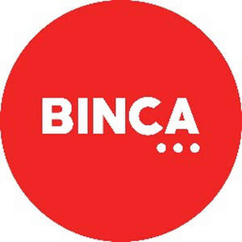

Trade Mark Journal No.2025/031 1 August 2025
UK00004234390 16 July 2025 (9,12,35,36,37,38,39,42)
Mark 1

Mark 2
Mark 3
- Class 9
- Computer software; computer programs; compact discs, DVDs and other digitals recording media; computer software for use in the field of personal and business finance and accounting, transaction processing, tax preparation and planning, tax filing, business process management, and financial planning; computer software for database and data management; computer software for inventory management; data and information stored on magnetic, optical, magneto-optical or solid-state media; electronic publications (downloadable or streamable); interactive computer software; downloadable software; software for searching electronic information from a global computer network or the Internet; downloadable electronic publications; downloadable publications; downloadable books; media content; all relating to vehicles, to vehicle auction services and to vehicle remarketing services.
- Class 12
- Motor vehicle parts, fittings and accessories for motor vehicles, namely: engines, transmissions, clutches, brakes, gearboxes, axles, differentials, drive shafts, chassis, shock absorbers, suspension systems, steering columns, steering wheels, bumpers, doors, windows, mirrors, body panels, windscreens, wipers, lights, indicators, horns, number plate holders, grilles, seats, seat belts, airbags, dashboards, vehicle roof racks, roof boxes, floor mats, wheel trims, hub caps, tyres, wheels, anti-theft devices and alarms; all included in Class 12.
- Class 35
- Advertising services; business management; business administration; office functions; auctioneering services; electronic auctioneering services; online auctioneering services; conduct of auction sales; vehicle auction services; auction advice and consultancy services; business information and research services; data handling; data processing; data collection services; database management; compilation and systemisation of data and information into computer databases; market analysis and research; outsourcing services [business assistance]; outsourcing services in the field of business operations; outsourcing services in the nature of arranging procurement of goods for others; consultancy and advisory services relating to all the aforesaid services.
- Class 36
- Insurance services; insurance brokerage services; valuation services; financial services relating to all of the aforesaid services; vehicle appraisal services; information, advisory and consultancy services relating to all the aforesaid services.
- Class 37
- Vehicle servicing, maintenance and repair services; garage services for vehicle repair and maintenance; inspection of vehicles prior to maintenance and repair; vehicle washing services; vehicle valeting services; vehicle preconditioning services; arranging for the repair of vehicles; refurbishment of vehicles; providing information relating to repair and installation of vehicles; services information, advisory and consultancy services relating to the aforesaid services.
- Class 38
- Telecommunications; communication services for the provision of on-line information and data services, for the gathering and dissemination of information and data, and for the provision of computer based information services by electronic, computer, cable, video, radio-paging, teleprinter, telex, teleletter, electronic mail, television, microwave, fibre optic, laser beam and communications satellite means; information, advisory and consultancy services relating to the aforesaid services.
- Class 39
- Transport; vehicle collection services; vehicle delivery services; transport of vehicles; logistics management services; logistics services consisting of the storage, transport and delivery of goods; tracking and tracing of shipments [transport information]; providing of information and enquiries to others for checking purposes relating to the state of progress of collection and delivery, via the Internet, telephone and mobile devices; information, advisory and consultancy services relating to the aforesaid services.
- Class 42
- Scientific and technological services and research and design relating thereto; industrial analysis and industrial research services; design and development of computer hardware and software; inspection of vehicles for roadworthiness before transport; Scientific and technological services and research and design relating thereto; industrial analysis and research services; design and development of computer hardware and software; technical consultation in the fields of computer hardware and software; computer software installation, setup, and configuration services; computer software and systems integration services; data conversion of computer program data or information; data recovery services; providing temporary use of non-downloadable software; providing temporary use of non-downloadable computer software for performing queries and transactions, and for storing, modifying, transmitting and receiving information in the fields of personal finance, business finance, accounting, banking, bill payment, financial planning, tax preparation and tax planning, all via computer and communication networks; information, advisory and consultancy services relating to the aforesaid services.
Fehr Brothers LTD